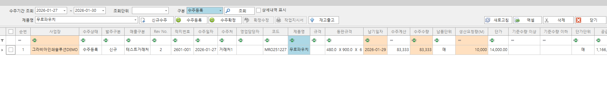
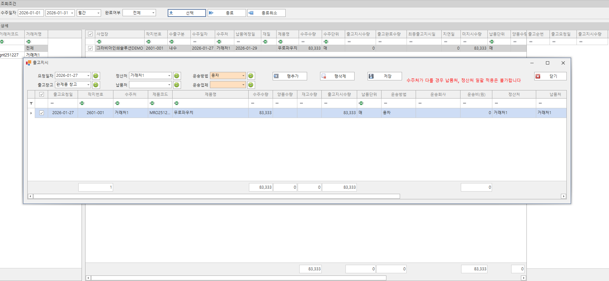
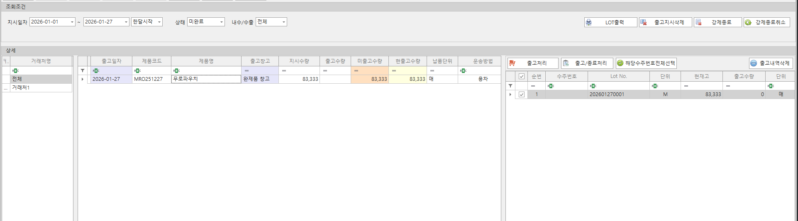
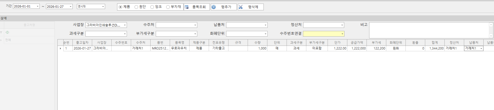

수주(주문) 기반 영업 관리
수주, 출고, 매출까지 전 과정을 연결하여 영업팀과 현장이 같은 데이터를 기준으로 움직입니다.
영업 관리 화면

수주(주문) 등록
- 고객의 수주(주문) 정보를 등록하고 관리할 수 있습니다.

출고지시
- 수주(주문)을 기반으로 한 출고지시를 관리할 수 있습니다.
- 출고별 운송방법, 운송비 정보를 관리할 수 있습니다.

출고처리(로트)
- 실제 출고될 제품을 로트 단위로 등록할 수 있습니다.
- Lot에 기반하여 출고 수량을 분할 출고 할 수 있습니다.

기타 출고
- 수주(주문)를 수동으로 연결하고 출고수량과 단가를 별도로 처리를 할 수 있습니다.
- 출고 정보를 직접 입력합니다.